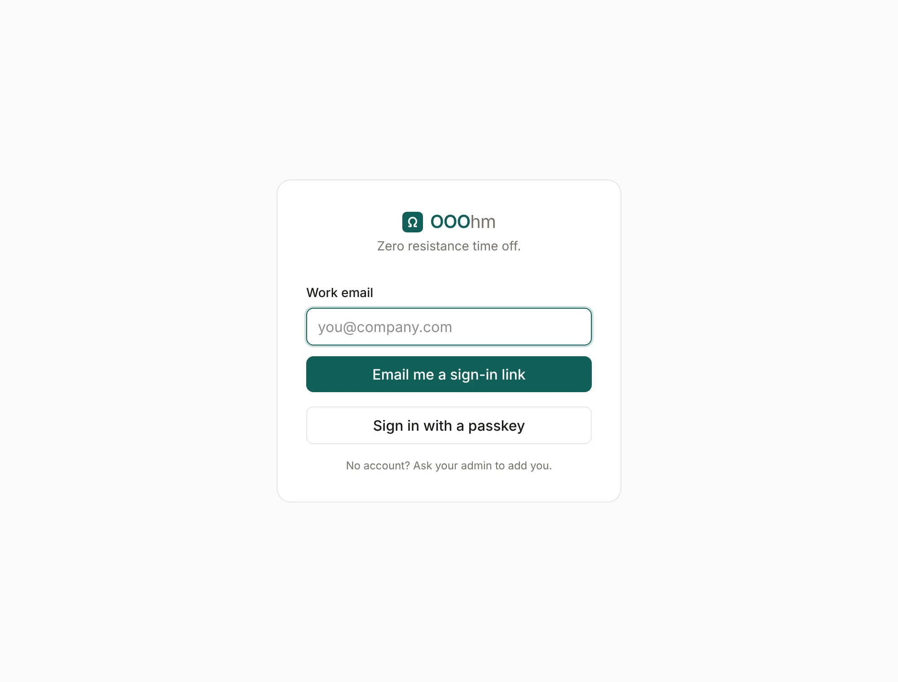
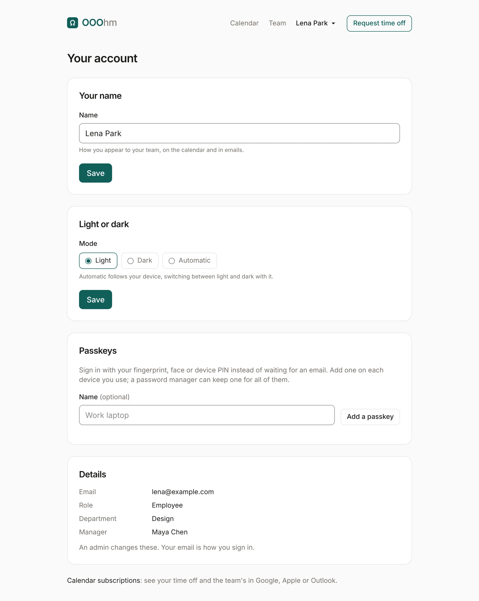
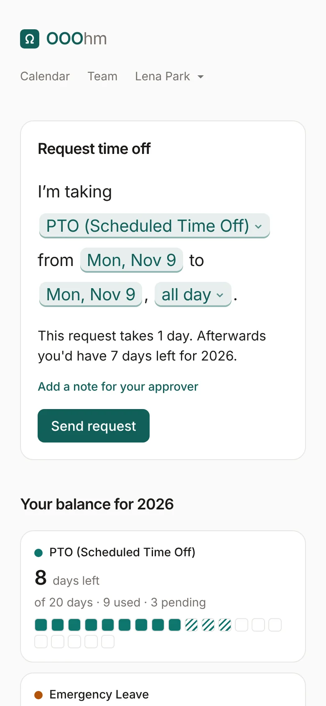

Getting started
Signing in
OOOhm is invite-only. An admin adds you, and you get an invite email with a sign-in link. After that, sign in from the sign-in page: give your work email and OOOhm emails you a sign-in link. Each link works once and expires in 15 minutes.

Once you have a passkey, Sign in with a passkey skips the email. If your company turned on Google sign-in, a Continue with Google button shows here too. Neither an email link nor Google can create an account: if nobody has invited your address, you can't get in.
Passkeys
A passkey signs you in with your fingerprint, face or device PIN instead of an email. Add one on your account page (Home shows a reminder until you have one). Add one on each device you use, or keep one in a password manager that syncs.
Your account
Open your name in the top bar, then Your account.

| Setting | What it does |
|---|---|
| Your name | How you appear to your team, on the calendar and in emails. |
| Light or dark | Light, Dark, or Automatic (follows your device). It applies where your company's theme has a dark version; today that's Classic. |
| Passkeys | Add a passkey, with an optional name like "Work laptop", or remove one. |
| Details | Your email, role, department and manager. Only an admin can change these; your email is how you sign in. |
At the bottom, Calendar subscriptions puts time off in Google Calendar, Apple Calendar or Outlook (see Calendar).
On a phone
Every screen works on a phone. The top bar stays short, and the request sentence wraps to fit.

First-time setup (admins)
A new install gets its first company and admin in one of two ways: the seed (SEED_ADMIN_EMAIL when the app starts), or the /setup page in the browser when SETUP_TOKEN is set. The setup page only works on an empty install and closes for good once used. See hosting.